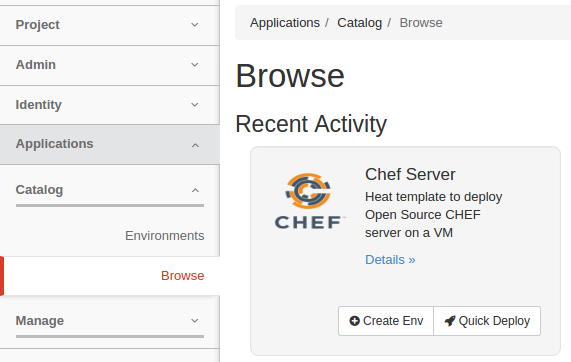
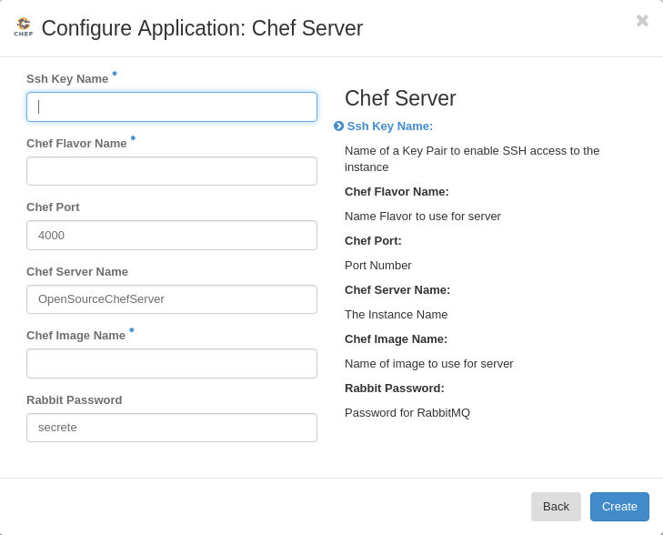

HOT packages¶
Compose a package¶
Murano is an Application catalog which intends to support applications defined in different formats. As a first step to universality, support of a heat orchestration template was added. It means that any heat template could be added as a separate application into the Application Catalog. This could be done in two ways: manual and automatic.
Automatic package composing¶
Before uploading an application into the catalog, it should be prepared and archived. A Murano command line will do all preparation for you. Just choose the desired Heat Orchestration Template and perform the following command:
murano package-create --template wordpress/template.yaml
Note, that optional parameters could be specified:
| –name: | an application name, copied from a template by default |
|---|---|
| –logo: | an application square logo, by default the heat logo will be used |
| –description: | text information about an application, by default copied from a template |
| –author: | a name of an application author |
| –output: | a name of an output file archive to save locally |
| –full-name: | a fully qualified domain name that specifies exact application location |
| –resources-dir: | |
| a path to the directory containing application resources | |
Note
To performing this command python-muranoclient should be installed in the system
As the result, an application definition archive will be ready for uploading.
Manual package composing¶
Application package could be composed manually. Follow the 5 steps below.
Step 1. Choose the desired heat orchestration template
For this example chef-server.yaml template will be used.
Step 2. Rename it to template.yaml
Step 3. Prepare an application logo (optional step)
It could be any picture associated with the application.
Step 4. Create manifest.yaml file
All service information about the application is contained here. Specify the following parameters:
Format: defines an application definition format; should be set to Heat.HOT/1.0Type: defines a manifest type, should be set to ApplicationFullName: a unique name which will be used to identify the application in Murano Catalog Description: text information about an application Author: a name of an application author or a company Tags: keywords associated with the application Logo: a name of a logo file for an application Take a look at the example:
Format: Heat.HOT/1.0 Type: Application FullName: com.example.Chef-Server Name: Chef Server Description: "Heat template to deploy Open Source CHEF server on a VM" Author: Kate Tags: - hot-based Logo: logo.png
Step 5. Create a zip archive, containing the specified files:
template.yaml,manifest.yaml,logo.png
Browse page looks like:
The configuration form, where you can enter template parameters, will be generated automatically and looks as follows:
After filling the form the application is ready to be deployed.
Hot packages with nested Heat templates¶
In Murano HOT packages it is possible to allow Heat nested templates to be saved and deployed as part of a Murano Heat applications. Such templates should be placed in package under ‘/Resources/HotFiles’. Adding additional templates to a package is optional. When a Heat generated package is being deployed, if there are any Heat nested templates located in the package under ‘/Resources/HotFiles’, they are sent to Heat together with the main template and params during stack creation.
These nested templates can be referenced by putting the template name into the
type attribute of resource definition, in the main template. This
mechanism then compose one logical stack with these multiple templates. The
following examples illustrate how you can use a custom template to define new
types of resources. These examples use a custom template stored in a
sub_template.yaml file
heat_template_version: 2015-04-30 parameters: key_name: type: string description: Name of a KeyPair resources: server: type: OS::Nova::Server properties: key_name: {get_param: key_name} flavor: m1.small image: ubuntu-trusty
Use the template filename as type¶
The following main template defines the sub_template.yaml file as value for
the type property of a resource
heat_template_version: 2015-04-30 resources: my_server: type: sub_template.yaml properties: key_name: my_key
Note
This feature is supported Liberty onwards.